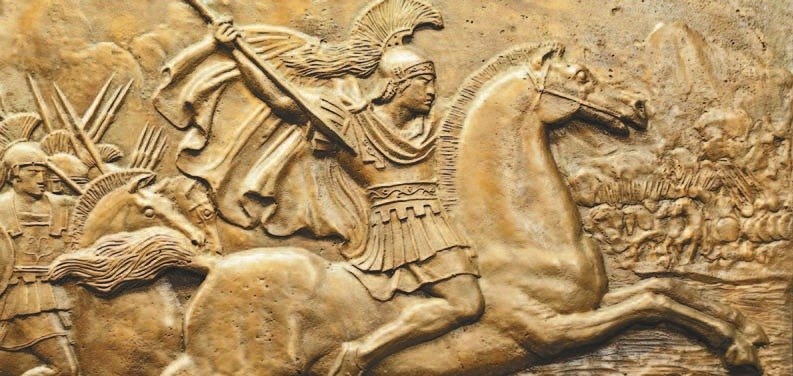
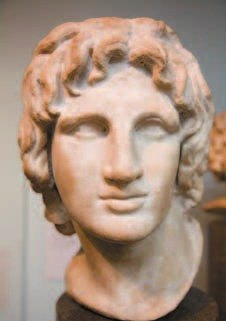
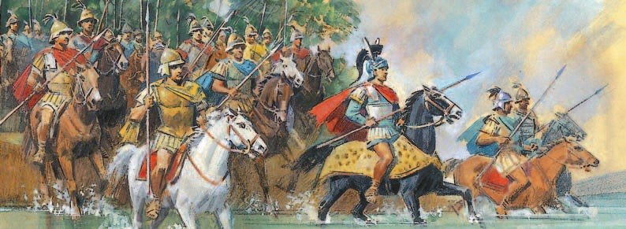
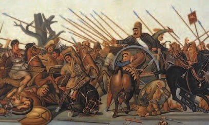
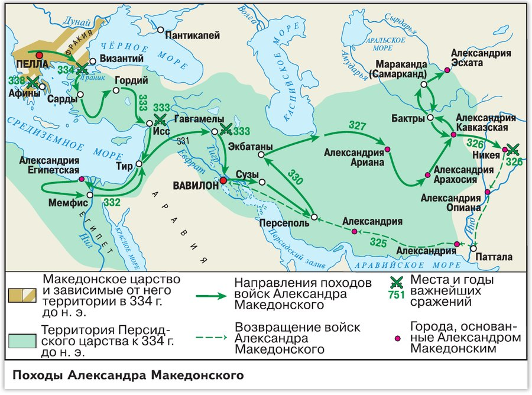

Первая победа Александра Македонского
Царём Македонии стал сын Филиппа II — . Потом его назовут Александром Македонским и Александром Великим. Он мечтал завоевать не только Персию, но и весь мир. В 334 году до н. э. он отправился в поход на Восток.
Его войско было меньше персидского. Зато воины были хорошо обучены и дисциплинированы, а командиры воевали ещё при Филиппе. С войском везли осадные и метательные машины — штурмовать города.
А ещё с армией шли учёные: они описывали новые народы, животных, растения и здания. Ты хочешь стать ветеринаром — тебе было бы интересно в таком походе.
Греческие города дали Александру корабли, и он переправился в Малую Азию. Путь преградила река Граник, за ней стояли персы. 21-летний царь под градом стрел перешёл реку и взобрался на крутой берег. Атака была такой быстрой и неожиданной, что персы бежали.
В этой атаке отличилась конница знати — . Это была первая большая победа Александра в Азии. Потом он легко занял Малую Азию: греческие города, которые раньше захватили персы (§28), сдались без боя.
Царём Македонии стал сын Филиппа II (2) Александр, который позже прославится как Александр Македонский и Александр Великий. Он мечтал завоевать не только Персию, но и весь мир. В 334 году до н. э. Александр отправился в поход на Восток. Греко-македонская армия по численности уступала войску персидского царя, но её отличали хорошая военная подготовка и высокая дисциплина. Командиры в армии Александра воевали ещё при Филиппе II (2). Вместе с войском двигались осадные и метательные машины для штурма и захвата городов.
Александр переправился в Малую Азию на кораблях, которые предоставили греческие города. Дальнейший путь преграждала река Граник, на её противоположном берегу расположилась армия персов. 21-летний царь под градом стрел противника преодолел реку и быстро поднялся по крутому откосу берега. Атака была стремительной и неожиданной — персы бежали. Это была первая блестящая победа войска Александра в Азии.
Александр легко овладел Малой Азией. Покорённые ранее персами греческие города сдались без боя.


- Как ты думаешь, благодаря чему юному Александру удалось продолжить дело своего отца?
1. Какие черты Александра из подписи к его скульптуре проявились у реки Граник?
2. Почему греческие города Малой Азии сдались Александру без боя? Вспомни, что сделали с ними персы (§28).
Поход в Египет
На следующий год Александр вошёл в Сирию. Там его ждал с главным войском персидский царь . Битва была у города Исс, в узкой долине между морем и горами. Персов было больше, но развернуться им было негде. Александр снова сам повёл войско в атаку. Дарий испугался мчащейся конницы и бежал — а за ним побежало всё его войско.
Из Сирии Александр пошёл в Египет. Египтяне встретили его как освободителя: ведь Египтом правили персы (§16). Местная знать объявила его фараоном и сыном бога Амона.
В походе Александр основал несколько десятков городов и называл их в свою честь . Для Александрии в Египте он в 332 году до н. э. сам выбрал место с удобной бухтой и сам начертил главные улицы и площади — как ты планируешь город в Майнкрафте. Скоро она стала главным городом Средиземноморья.
На следующий год Александр Македонский вступил на территорию Сирии. Здесь находились основные силы персов во главе с царём Дарием III (3). Битва произошла возле города Исс. В узкой долине между морем и горами персам, армия которых превосходила по численности войско Александра, негде было развернуться. Юный полководец вновь лично повёл свои войска в атаку. Испуганный видом стремительно приближающейся конницы, Дарий III (3) бежал, а вслед за ним бежало многочисленное персидское войско.
Из Сирии Александр направился в Египет. Египтяне встретили его как освободителя от персидского гнёта. Местная знать объявила полководца фараоном и сыном бога Амона.
Во время похода Александр Македонский на завоёванных территориях основал несколько десятков новых городов. В свою честь полководец называл города Александриями. Для Александрии в Египте, основанной в 332 году до н. э., он сам выбрал место с удобной бухтой и лично спланировал основные улицы и площади. Город вскоре превратился в крупнейший политический, экономический и культурный центр Средиземноморья.

- Что решило исход сражения при Иссе?
3. Что общего у битвы при Иссе и у Фермопил (§28)?
4. Почему египтяне встретили Александра как освободителя? Вспомни §16.
Крушение Персидской державы
Пока Александр был в Египте, Дарий III собрал огромное войско. Кроме пехоты и конницы, у него были колесницы с острыми серпами на колёсах и боевые слоны. Ты видела слонов в зоопарке и в цирке — представь их в бою!
В 331 году до н. э. у местечка близ реки Тигр было одно из самых больших и кровопролитных сражений древности. Оно шло целый день. Македонские лучники перебили возничих колесниц — и колесницы никому не навредили. Слоны испугались грохота битвы и повернули на самих персов. Персы потеснили левый фланг македонцев, но конница Александра прорвала их ряды и двинулась прямо к Дарию. И персидский царь снова бросил армию и бежал.
Персидское войско было уничтожено. Александр без боя вошёл в главный город Востока — древний Вавилон (§12). А родовую столицу персидских царей, , его воины разграбили и сожгли. Сокровищ было столько, что понадобились 10 тысяч повозок и 5 тысяч вьючных верблюдов. Ты сама каталась на верблюде в «Кочевнике» — а тут их целых 5 тысяч!
Дарий III потерял всё, и его убили свои же приближённые. Александра провозгласили царём Персии. Так закончилась первая половина похода.
Пока армия Александра находилась в Египте, Дарий III (3) собрал огромное войско. Кроме пехоты и конницы, его ряды пополнили колесницы с острыми серпами на колёсах и боевые слоны.
В 331 году до н. э. у местечка Гавгамелы близ реки Тигр произошло одно из самых крупных и кровопролитных сражений древности. Оно продолжалось целый день. Персы бросили в бой серпоносные колесницы, но македонцы из луков перебили возничих, и колесницы не причинили им вреда. Слоны, напуганные грохотом сражения, повернули назад и двинулись навстречу персам. В какой-то момент персы потеснили левый фланг противника, но македонская конница прорвала их ряды. Александр приближался к месту, где находился сам Дарий III (3). Мужество оставило персидского царя, он бросил свою армию и бежал с поля боя.
Армия Александра уничтожила персидское войско и без боя вошла в главный город Востока — древний Вавилон. Чтобы окончательно уничтожить всякое упоминание о Персидской державе, победители разграбили и сожгли родовую столицу персидских царей Персеполь. Им досталось огромное количество сокровищ, для перевозки которых потребовалось 10 тысяч подвод и 5 тысяч вьючных верблюдов. Потерявший всю власть и богатство Дарий III (3) был убит своими приближёнными. Персидский трон стал свободным. Александра провозгласили царём Персии. На этом закончилась первая половина похода.
- Благодаря чему македонская армия смогла одержать ряд побед над превосходящими войсками Дария III (3)?
5. Дарий III дважды бежал с поля боя. Что после этого делало его войско? Сравни Исс и Гавгамелы.
6. Македонцы сожгли Персеполь. А что персы сделали с Афинами (§28)?
Завершение Восточного похода и создание державы Александра Македонского
Дальше Александр пошёл в Среднюю Азию и захватил Бактрию и Согдиану. Местные народы не хотели подчиняться чужеземцам, и два года шла война. Александр подавил сопротивление жестоко: его воины сожгли все поселения, а сотни тысяч жителей убили или продали в рабство. На реке Сырдарье, в самой дальней точке похода, он основал Александрию Эсхату — «Крайнюю».
Он мечтал дойти до края земли и повёл войско в Индию. Там было жарко и влажно, всё время лили дожди, а воины умирали не только в боях, но и от неизвестных болезней — малярии и тропической лихорадки. Измученные многолетним походом, они потребовали вернуться домой. И Александр повернул назад.
В 324 году до н. э. он с остатками армии вошёл в Вавилон. Возвращаться в Македонию он не захотел.
За десять лет похода на месте Персидского царства выросла новая держава — больше всех, какие были раньше. Столицей Александр сделал Вавилон.
Впервые в одной стране смешались народы Европы и Азии, их обычаи и образ жизни. На завоёванных землях строили города по образцу греческих полисов. Чтобы сдружить разные народы, Александр устроил огромную свадьбу: 80 его друзей и 10 тысяч воинов женились на местных девушках. А сам он женился на восточной красавице Роксане, дочери местного правителя.
Летом 323 года до н. э., готовясь к новым походам, Александр заболел лихорадкой и через две недели умер. Ему было 32 года. После его смерти держава распалась на несколько царств — их возглавили его военачальники (§37).
В ходе дальнейшего продвижения в Среднюю Азию Александр Македонский захватил Бактрию и Согдиану. Там он в течение двух лет воевал с местными народами, не желавшими подчиняться чужеземцам. Только после того как его воины сожгли все поселения, а сотни тысяч их жителей убили и продали в рабство, завоеватель Азии подавил сопротивление. На берегу реки Сырдарьи в крайнем пункте своего продвижения в Среднюю Азию молодой царь основал Александрию Эсхату (Крайнюю).
Полководец мечтал дойти до края земли и повёл своих воинов в Индию. В незнакомой стране с удивительным растительным и природным миром, с жарким и влажным климатом армия Александра воевала с войсками местных правителей. Воины Александра погибали не только от вражеских мечей и стрел, но и от неведомых болезней: малярии и тропической лихорадки. Измотанные многолетними военными походами, страдающие от болезней и непрекращающихся ливней, они потребовали возвращения домой. Александр Македонский повернул войско назад. В 324 году до н. э. с остатками своей армии великий полководец вступил в Вавилон. Возвращаться в Македонию он не хотел.
В результате десятилетнего военного похода на руинах Персидского царства возникла новая огромная держава, превзошедшая размерами все до сих пор существовавшие государства. Её столицей Александр провозгласил Вавилон.
Новое государство впервые объединило и перемешало между собой народы Европы и Азии, их культуру, образ жизни. На завоёванных землях возникали города, созданные по типу греческих полисов. Александр предпринимал меры, чтобы сплотить разноплеменное население, например устроил грандиозную свадьбу 80 своих близких друзей и 10 тысяч солдат с местными девушками. Позднее сам царь женился на восточной красавице, дочери местного правителя Роксане.
Летом 323 года до н. э. в разгар подготовки к новым походам великий покоритель Востока внезапно заболел лихорадкой. Через две недели Александр Македонский скончался в тридцать два года.
После смерти Александра его держава распалась на несколько самостоятельных царств во главе с его военачальниками.

▲ Рассмотри карту и назови страны и территории, которые завоевал Александр Македонский.
- Чем закончился поход Александра Македонского на Восток?
7. Зачем Александр устроил свадьбу 10 тысяч воинов с местными девушками и сам женился на Роксане?
8. Почему воины потребовали вернуться? Сравни с тем, что ты знаешь о долгом пути Одиссея домой (§22).
Подведём итоги
- Рассмотри карту и назови страны и территории, которые завоевал Александр Македонский.
- Поход в какую страну был последним для Александра Македонского? Какими были результаты этого похода?
- Подумай, почему держава персов не выдержала натиска Александра Македонского.
- Объясни, как Александру удалось объединить вокруг себя не только эллинов, но и покорённые народы.
Прочитай текст об Александре Македонском и ответь на вопрос.
Ещё юношей он собственноручно объездил дикого коня Буцефала, которого не мог укротить ни один опытный наездник. Присутствовавший при этом Филипп не смог скрыть слёз радости и произнёс: «Ищи, сын мой, царство по себе, ибо Македония для тебя слишком мала!»
Александра отличали дружелюбие и бескорыстие в общении с друзьями. Когда он стал царём Азии, то без сожаления раздаривал своим друзьям богатства, дворцы, отдавал им в управление целые области. Но в то же время он был упрям и добивался цели любым путём. В городе Гордии находилась колесница, на дышле которой был запутанный узел. С ним было связано поверье: кто распутает узел, тот станет владыкой мира. Никто не мог справиться с этим узлом. Александр решил его распутать, но, сколько ни бился, у него тоже ничего не получалось. Тогда он выхватил меч и одним ударом разрубил его.
Сформулируй ответ на главный вопрос параграфа — в чём были причины успехов Александра Македонского в войне с персами? Приведи два-три довода.
Проверь себя
Нажимай по очереди — от самого древнего к самому близкому к нам. До н. э.: чем больше число, тем раньше.
1. Где Александр одержал первую победу в Азии?
2. Почему при Иссе персам не помогло большое войско?
3. Кем объявили Александра в Египте?
4. Что случилось со слонами персов при Гавгамелах?
5. Почему Александр повернул назад из Индии?
6. Что стало с державой после смерти Александра?
Расскажи вслух
Начало похода и Граник
- 334 год до н. э.: Александр идёт на Восток; войско меньше, но лучше обучено.
- Граник: 21-летний царь под стрелами переходит реку, гетайры, персы бегут.
- Греческие города Малой Азии сдаются без боя.
Исс и Египет
- Исс: узкая долина, Дарий III бежит, за ним войско.
- Египет встречает освободителя: фараон, сын бога Амона.
- 332 год до н. э.: Александрия — Александр сам начертил улицы.
Гавгамелы и конец Персии
- 331 год до н. э.: колесницы с серпами и слоны не помогли, Дарий бежал.
- Вавилон без боя, Персеполь сожжён, 10 тысяч повозок и 5 тысяч верблюдов с сокровищами.
- Дария убили свои; Александр — царь Персии.
Средняя Азия, Индия и держава
- Бактрия и Согдиана, Александрия Эсхата; Индия — ливни и болезни, воины требуют домой.
- 324 год — Вавилон, столица огромной державы; смешение народов, свадьба 10 тысяч воинов.
- 323 год: смерть в 32 года, держава распалась.
Главный вопрос: почему Александр побеждал
- Обученная армия: фаланга, гетайры, опытные командиры, машины.
- Смелость и личный пример царя.
- Слабость персов: царь бежал, покорённые народы ждали освободителя.